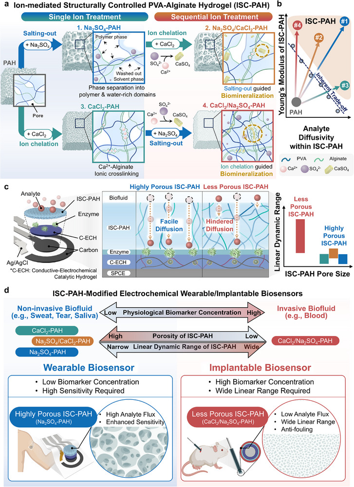

Research context and placement
The gel interface jointly controls transport from biofluids to sensors and mechanical suitability, fitting tissue-coupling analyte transport.
Research background
A hydrogel can be both a compliant sensor interface and a transport pathway for analytes. Mechanical strength and rapid transport do not necessarily improve together. This work uses ion-treatment sequence to tune the internal structure of PVA–alginate gels.
Approach and advances
Sulfate salting-out promotes PVA association and crystallization, while calcium creates alginate ionic junctions. Reversing the treatment order changes the sequence of junction formation, porosity and mineralization. Processing history therefore matters even when the ions are the same.

Biosensor overview linking ion-treatment sequence and hydrogel structure with mechanical properties and analyte diffusion.
Dongwook Lee, Soo A Kim, Beom‐Jun Shim et al.. “Ion‑Mediated Structural Engineering of Hydrogel Interfaces for Tunable Mechanical and Analyte Diffusion Properties in Electrochemical Biosensors”. Figure 1. DOI: 10.1002/adma.202515767. CC BY 4.0. Public original image copied byte-for-byte, with no resizing, cropping, annotations or re-encoding.
Source figure and caption ↗ · DOI: 10.1002/adma.202515767 ↗ · CC BY 4.0 ↗
Evaluation and conditions
Calcium-first processing links preformed junctions and calcium-sulfate formation to a denser reinforced network. Sulfate-first processing establishes porosity earlier. Structural, mechanical and transport observations must be read together to connect the resulting architectures with sensor access.
Key findings
The value is selecting an interface for a measurement environment, rather than identifying one gel for every sensor. Sweat and insertable sensing impose different transport and mechanical requirements. This explanation remains bounded to structure and transport, not clinical sensing accuracy.
Limits and open questions
Comparisons need matched analyte, concentration, thickness and swelling state, alongside response time and strength. Biofluid interference and calibration under repeated loading remain additional checks. Reading the structural mechanism does not complete every sensor-specific validation.
Related external research
Fully integrated wearable sensor arrays for multiplexed in situ perspiration analysis
The comparator integrates multiplexed sweat analysis, temperature calibration and circuitry; #90 tunes the upstream transport/mechanical interface.
Different architectures, targets and calibration preclude sensitivity-only comparisons.
Abstract checkedCorresponding-author verification
Jungmok Seo: corresponding authorThis record concerns Jungmok Seo’s correspondence designation. Author order or an asterisk alone is not treated as confirmation; this check is separate from verification of the research content.
- Correspondence evidence source ↗
Correspondence: Jungmok Seo; Jayoung Kim
Published PDF page 1: correspondence/author information; title and DOI page 1 · local_published_pdf_read
- Main-text review scope
- Read publisher Abstract, Introduction and selected §2.1–2.2; reread ion-sequence, structure and transport explanations on pp. 2–4 of the title/DOI-matched local published PDF. Sensor-specific calibration/interference and a complete SI audit are not included.
- Supplementary review scope
- Supporting information was not comprehensively read. A main-text citation to supplementary results does not count as direct inspection of those results.
- Pending verification
- Check calibration, interference, biofluid conditions and supplements in school Chrome. Do not directly rank sweat and interstitial-fluid configurations.
COVERAGE & OUTREACH
Coverage and outreach
Links are checked for their relationship to this paper. Media publication does not establish independent reporting or additional experimental validation.
연세대 김자영, 서정목 교수팀, ‘단일 하이드로겔의 이온 매개 구조 제어… 체액 맞춤형 전기화학 바이오센서 인터페이스 구현’ ↗
The exact title, DOI 10.1002/adma.202515767 and ion-sequence-controlled PVA–alginate study match.
Body read The official release title, date, body and paper-information section were read.
Unverified candidates and access limits (1)
Unverified candidate · 연세대 김자영, 서정목 교수팀, ‘단일 하이드로겔의 이온 매개 구조 제어… 체액 맞춤형 전기화학 바이오센서 인터페이스 구현’ ↗
The indexed title matches the official announcement, but the post body was not accessible.
Body access limited The web open failed and public HTTP failed certificate validation. No certificate check was bypassed; this remains a candidate.
Sources and verification scope
Read publisher Abstract, Introduction and selected §2.1–2.2; reread ion-sequence, structure and transport explanations on pp. 2–4 of the title/DOI-matched local published PDF. Sensor-specific calibration/interference and a complete SI audit are not included.
The additional commentary is editorially approved within the stated evidence scope. This does not imply complete verification of all main-text and supplementary material.
- Additional main-text review scope
- Read publisher Abstract, Introduction and selected §2.1–2.2; reread ion-sequence, structure and transport explanations on pp. 2–4 of the title/DOI-matched local published PDF. Sensor-specific calibration/interference and a complete SI audit are not included.
- Additional supplementary review scope
- Supporting information was not comprehensively read. A main-text citation to supplementary results does not count as direct inspection of those results.
- Public publication baseline ↗ · #90 · 2026-10-03
- Crossref metadata ↗: Only public bibliographic metadata registered with Crossref was checked. This does not mean that the publisher page, abstract, or full text was read; full-text verification in the school Chrome session remains pending. license_urls lists registered links and does not establish permission to redistribute text or figures. It may include TDM or posting-policy links.
- Ion‑mediated Structural Engineering of Hydrogel Interfaces for Tunable Mechanical and Analyte Diffusion Properties in Electrochemical Biosensors ↗
public_publisher_selected_full_text · ABSTRACT; Introduction; §2.1 Ion-mediated structural engineering; §2.2 selected text and Figure 2 explanatory captions; 2026-10-03 - Fully integrated wearable sensor arrays for multiplexed in situ perspiration analysis ↗
public_external_abstract · Abstract and DOI metadata; read 2026-10-03. - Ion‑Mediated Structural Engineering of Hydrogel Interfaces for Tunable Mechanical and Analyte Diffusion Properties in Electrochemical Biosensors ↗
local_published_pdf_selected_full_text_read · PDF pp. 2–3: introduction and interface-design rationale - Ion‑Mediated Structural Engineering of Hydrogel Interfaces for Tunable Mechanical and Analyte Diffusion Properties in Electrochemical Biosensors ↗
local_published_pdf_selected_full_text_read · PDF pp. 3–4: ion sequence, salting-out, alginate junctions and calcium-sulfate formation - Ion‑Mediated Structural Engineering of Hydrogel Interfaces for Tunable Mechanical and Analyte Diffusion Properties in Electrochemical Biosensors ↗
local_published_pdf_selected_full_text_read · PDF pp. 3–4: sequence-dependent structure and transport; public §2.1–2.2 and Fig. 2 explanatory text - Ion‑Mediated Structural Engineering of Hydrogel Interfaces for Tunable Mechanical and Analyte Diffusion Properties in Electrochemical Biosensors ↗
local_published_pdf_selected_full_text_read · PDF pp. 2–4: distinct sensing-interface requirements; public §2.1–2.2 - Ion‑Mediated Structural Engineering of Hydrogel Interfaces for Tunable Mechanical and Analyte Diffusion Properties in Electrochemical Biosensors ↗
local_published_pdf_selected_full_text_read · PDF pp. 2–4; editorial matched-condition questions; sensor-specific calibration remains pending - Ion‑Mediated Structural Engineering of Hydrogel Interfaces for Tunable Mechanical and Analyte Diffusion Properties in Electrochemical Biosensors ↗
independent_reviewer_selected_main_text · DOI/title, Abstract, §1, §2.1, §2.2 including Figure 2 caption; §1/§2.1 reread separately after combined output truncation - Additional commentary source ↗
Research background · PDF pp. 2–3: introduction and interface-design rationale · local_published_pdf_selected_full_text_read - Additional commentary source ↗
Approach and advances · PDF pp. 3–4: ion sequence, salting-out, alginate junctions and calcium-sulfate formation · local_published_pdf_selected_full_text_read - Additional commentary source ↗
Evaluation and conditions · PDF pp. 3–4: sequence-dependent structure and transport; public §2.1–2.2 and Fig. 2 explanatory text · local_published_pdf_selected_full_text_read - Additional commentary source ↗
Key findings · PDF pp. 2–4: distinct sensing-interface requirements; public §2.1–2.2 · local_published_pdf_selected_full_text_read - Additional commentary source ↗
Limits and open questions · PDF pp. 2–4; editorial matched-condition questions; sensor-specific calibration remains pending · local_published_pdf_selected_full_text_read - Additional commentary source ↗
Connections to related work · Interface-design rationale; external abstract · local_published_pdf_selected_full_text_read - Additional commentary source ↗
Connections to related work · Fully integrated wearable sensor arrays for multiplexed in situ perspiration analysis; DOI 10.1038/nature16521; previously verified Abstract · public_external_abstract_read